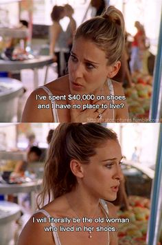

Personal
August 2016
Last year 2015 - was the year of conscientious consumerism for myself. I kicked my shopping habit to the curb, for an entire year. I bought no new clothes, accessories or shoes. (even thrifted, or second hand!)
I was the type of person who went to Anthropology every month and spent hundreds of dollars each time. Granted, I did almost always exclusively shop in the sale section, but still -- that's a lot of new clothes and money! I was addicted to online shopping and I bought anything that I thought was a "bargain"! I put a lot of my identity in my consumeristic shopping habits.
All I see on social media are beautiful girls in most the beautiful and trendy clothes. I have been and was sucked into this cycle of buying into a fake reality. I was wasting my money, intellect, time and energy. Not to say fashion is bad and people who like to take care of themselves and treat themselves is bad. It just was leading me to have negative experiences and get into bad habits.
I really wanted to pay attention to the clothes I have (and once loved) and tossing what I am not enjoying anymore. At the end of each season I also had the goal to cut that season's clothes down to at least half. I wanted to be surrounded by items that only brought me happiness. My mornings used to consist of digging through drawers full of wrinkled and unfolded clothes to find an outfit. It was stressful and time consuming. Half the clothes I hadn't warn for at least a year. My husband always poked fun at me saying that I had the entire closet, armoire, and 6 drawers, while he had 4 drawers - for everything! Now, I am happy to report our closet is split 50/50, and I am down to less than half of the drawers, (&& with no armoire!).
There are some new looks I would like to have in my wardrobe now, but I am not planning on doing a huge shopping spree. I plan to remove even more clothes and my new goal is to try to be able to count the amount of a clothing type I have on my hands. (i.e. around 10 or less shoes, pants, shirts...etc). I also plan on prioritizing, to minimize the environmental impact, buying second hand. Less consumerism, less wasted resources and less in the landfills.
I have saved a boatload of money and peace of mind from not worrying about "keeping up with the trends". I've also "made money"! How? That money was kept in my bank account and invested! Compounding interest, baby. I am more of a long-term thinker now when it comes to buying things for myself, not short.
This has trickled into other areas of my life as well. I rarely get haircuts, maybe once every few months. I wash my hair with homemade, cheap and simple remedies. I don't buy the $5 cup of Starbucks coffee on my way to work.
Update: Since I wrote this article, I did another challenge. I went a year without a haircut!
I saved a lot of money by changing a few, simple expenditures each month:
Total of: $370/month
Everything costs a thousand times more than the price tag you see.
The true cost of a Starbucks habit of picking up a regular coffee on the way to work each workday: $4/day = $20/week = $15,040 in coffee over just ten years!! (&& that's without interest from investing)
Or, a new pair of shoes, or a professional haircut.. once a month, for a total of $100. $17,300 of new shoes and hair clippings in ten years!
My Future Value (FV) of the Growing Ordinary Annuity in total is $64,010!
Calculate your own monthly expenses compounded over ten years by multiplying the price by 173.
Now you don’t want something just because your next paycheck will cover it. You want those big sums in bold above much more, right?
I do keep a pinterest board full of looks and clothes that I adore to track my taste and wants. It also helps me prioritize. That strategy has been very helpful because now, looking back at my pinterest, I notice I don't like a lot of the looks or clothes much anymore! Some of it I thought I would like but it was an awkward style I bought into, or it was too unique and it wouldn't have gone with anything. Keeping a pinterest helps me keep track of things I like, as it ebbs and flows, so I can make meaningful transactions on any new items I wish to purchase in the future.
Sometimes when I see women walking around in super cute outfits I want to ask them where they got it and purchase it! But overall, my urges have subsided and the thought of shopping now almost makes me want to gag. You want me to spend all that money on what!?
p.s. this goes for shoes too.
